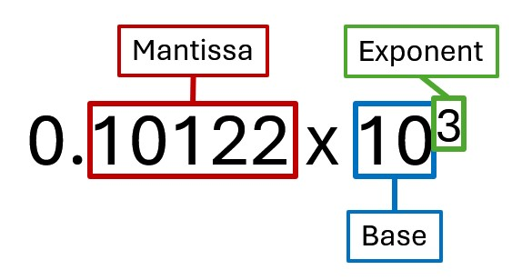

Data Representation - Numbers
Decimal and Binary Systems
The numbering system that we use is known as the decimal (denary) or base 10 system. This means the we have 10 potential digits in our numbers - 0, 1, 2, 3, 4, 5, 6, 7, 8, and 9.
Computers use a binary number system instead, base 2, meaning that there are only 2 potential digits, 1 and 0.
Each digit in a binary number is known as a binary digit. This is shortened to bit, which is the smallest unit of measurement for data in a computer.
Decimal numbers have place values - 1, 10, 100, 1000, 10000, etc. Note that these are all multiples of 10, this is because the decimal system uses base 10.
The binary system is base 2, so its place values are 1, 2, 4, 8, 16, etc. Multiples of 2. In a computer system, we read these from the right to left, and the number of place values depends on the number bits that we are using. for example, in an 8-bit system there would be 8 values, starting with the largest one - 128 64 32 16 8 4 2 1.
Converting Binary Integers to Decimal
A 8-bit binary number consists of eight digits, with each digit being 1 or 0. To convert this into a decimal number we must first draw a binary table.
To represent 8-bit binary, we would draw a table with 8 columns and 2 rows. The heading for each column would be the place values for binary numbers, read from right to left. As show below:
| 128 | 64 | 32 | 16 | 8 | 4 | 2 | 1 |
|---|---|---|---|---|---|---|---|
Plug the binary number into this table. As an example I will use the binary number 00110011.
| 128 | 64 | 32 | 16 | 8 | 4 | 2 | 1 |
|---|---|---|---|---|---|---|---|
| 0 | 0 | 1 | 1 | 0 | 0 | 1 | 1 |
Now add together all of the numbers that have a 1 beneath them on the table.
31 + 16 + 2 + 1 = 61
Note that the highest number that can be represented using 8 bits is 11111111. If we add all of the numbers from the table together we get 255 (28-1-1).
Converting Decimal Integers to Binary
To convert a decimal number into binary, you have to place 1s in the table under numbers that add up to the decimal number you are converting. The best way to do this is to check the largest number on the table and see if it can fit into the number you are converting.
If it doesn't fit place a 0 under that number and move onto the next number.
If it does, then place a 1 under that number and subtract it from the number you are converting, then move onto the next number.
In this example, we will convert the number 28 into binary.
- You cannot subtract the numbers 128, 64, or 32 from 28 without going below zero, so put 0s under those numbers.
- You can subtract 16 from 28, so we place a 1 under the number 16 and the subtract 16 from 28. 28-16=12
- You can fit 8 into 12, so place we place a 1 under the 8 and subtract 8 from 12. 12-8=4
- You can fit 4 into 4, so we place a 1 under the number 4 and subtract 4 from the total, leaving 0.
- Since we are at 0, we cannot subtract any more numbers, meaning the remaining numbers must have 0 under them.
| 128 | 64 | 32 | 16 | 8 | 4 | 2 | 1 |
|---|---|---|---|---|---|---|---|
| 0 | 0 | 0 |
| 128 | 64 | 32 | 16 | 8 | 4 | 2 | 1 |
|---|---|---|---|---|---|---|---|
| 0 | 0 | 0 | 1 |
| 128 | 64 | 32 | 16 | 8 | 4 | 2 | 1 |
|---|---|---|---|---|---|---|---|
| 0 | 0 | 0 | 1 | 1 |
| 128 | 64 | 32 | 16 | 8 | 4 | 2 | 1 |
|---|---|---|---|---|---|---|---|
| 0 | 0 | 0 | 1 | 1 | 1 |
| 128 | 64 | 32 | 16 | 8 | 4 | 2 | 1 |
|---|---|---|---|---|---|---|---|
| 0 | 0 | 0 | 1 | 1 | 1 | 0 | 0 |
Real Numbers - Floating Point Representation
An integer is a whole number such as 1, 2, 55, 6000; any number that does not have a decimal point.
Computers can also represent real numbers. These are numbers that do have a decimal point, such as 1.5, 0.23 or 900.12943.
Unfortunately, computers cannot represent a decimal point, so they need to change the form of the number into something that can be represented. Fortunately, scientific notation can be used for this!
For example, the computer would interpret the number 101.22 as 0.10122x103.
This is called floating point, because the decimal point is moved until it is at the very font of the number. By doing this, the computer only needs to consider three things, the mantissa, the base and the exponent when representing real numbers.
- Base - If we think about Real Numbers as numbers in our decimal system, then the base is always 10, since the decimal system is Base 10. When you move onto higher, we will start looking at binary real numbers, which have a base of 2.
- Mantissa - The mantissa is actual digits of the real number. In the case of our example above, the mantissa would be 10122. The mantissa always begins with a number greater than 0.
- Exponent - The exponent is the power to which the base is raised. It is the number of places that the decimal point must be moved so that it sits in front of the mantissa. If the decimal point has to move in the other direction (for example, if the number were 0.0025), then the exponent would be negative (in the case of 0.0025 it would be -2).